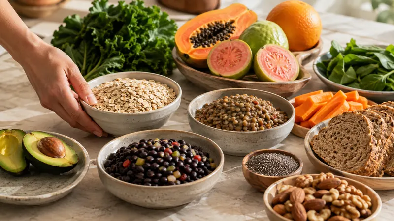

Alimentación y microbiota
Fibra soluble e insoluble: diferencias y alimentos

La fibra soluble y la insoluble son componentes de los alimentos vegetales que se comportan de manera diferente al entrar en contacto con el agua. La soluble puede dispersarse o disolverse y, en algunos casos, formar un gel; la insoluble conserva más su estructura y contribuye al volumen de las heces.
Esta clasificación ayuda a entender la fibra, pero no divide la comida en dos grupos perfectos. Una caraota, una fruta o un cereal pueden contener una mezcla de ambas. Para la mayoría de las personas es más útil variar los alimentos vegetales que calcular gramos de cada tipo.
Qué es la fibra dietética
La fibra dietética incluye carbohidratos presentes en plantas que no son digeridos ni absorbidos por completo en el intestino delgado. Sus propiedades cambian según la estructura: además de la solubilidad, importan la viscosidad, la capacidad de retener agua y el grado en que los microorganismos intestinales pueden fermentarla.
Por eso, “soluble” no significa automáticamente “fermentable” y “insoluble” no significa que sea inerte. Dos fibras de la misma categoría pueden comportarse de forma distinta. También influyen la preparación del alimento, la cantidad consumida y las características de cada persona.
Fibra soluble: cómo se comporta y dónde encontrarla
La fibra soluble se dispersa en agua. Algunas variedades son viscosas y forman una especie de gel durante la digestión. Otras son fermentadas con mayor facilidad por microorganismos del colon. No todas reúnen ambas características en el mismo grado.
Entre las fuentes cotidianas se encuentran:
- avena y cebada;
- caraotas, lentejas, garbanzos y arvejas;
- frutas como guayaba, manzana, naranja y lechosa;
- vegetales como zanahoria, auyama y berenjena;
- semillas, frutos secos y psyllium.
MedlinePlus explica que la fibra soluble atrae agua durante la digestión. Sin embargo, no conviene prometer que cualquier alimento o suplemento tendrá un efecto idéntico: la cantidad, la viscosidad y el contexto de la alimentación importan.
Fibra insoluble: qué la distingue y qué alimentos la aportan
La fibra insoluble no se disuelve en agua de la misma manera. Puede retener líquido y aportar estructura y volumen al contenido intestinal. Se encuentra sobre todo en:
- salvado de trigo y cereales integrales;
- panes o preparaciones elaboradas con el grano completo;
- pieles comestibles de frutas y vegetales;
- hojas verdes, vainitas y otros vegetales;
- frutos secos y semillas.
“Insoluble” tampoco equivale a “mejor para todos”. Una cantidad grande de salvado añadida de golpe puede aumentar la incomodidad en algunas personas. Quienes tienen una enfermedad digestiva, una cirugía reciente o indicación de limitar residuos necesitan recomendaciones individualizadas.
Una comparación sencilla, sin reglas rígidas
- Soluble: se dispersa en agua; algunas fibras forman geles y muchas pueden ser fermentadas.
- Insoluble: mantiene más su estructura y contribuye al volumen de las heces.
- Ambas: suelen coexistir en alimentos vegetales y pueden formar parte de una alimentación variada.
No hace falta elegir una y excluir la otra. Tampoco existe una proporción universal que debas reproducir en cada plato. La recomendación de la Organización Mundial de la Salud para adultos —al menos 25 gramos diarios de fibra naturalmente presente en alimentos— se refiere a fibra total, no a una cuota separada de soluble e insoluble.
Cómo combinarlas con alimentos cotidianos
Una comida puede reunir varios tipos de fibra sin convertirse en una fórmula. Por ejemplo, arepa acompañada de caraotas y vegetales; avena con fruta y semillas; o arroz con lentejas y ensalada. La idea no es que cada plato sea perfecto, sino ampliar la variedad a lo largo del día y de la semana.
También puedes hacer sustituciones graduales: añadir avena a un desayuno habitual, incluir una porción pequeña de legumbres, preferir una fruta entera en lugar de jugo colado o sumar un vegetal al almuerzo. Nuestra guía explica cómo aumentar la fibra sin gases ni hinchazón con cambios progresivos.
¿Qué relación tienen con la microbiota?
Algunas fibras llegan al colon y son utilizadas por microorganismos, que generan metabolitos como los ácidos grasos de cadena corta. El resultado depende del tipo y la estructura de la fibra, la cantidad, la dieta habitual y la microbiota individual.
Una revisión sistemática de ensayos en adultos sanos encontró cambios en ciertos grupos bacterianos con intervenciones de fibra, pero no un aumento uniforme de la diversidad. Otra revisión observó resultados variables en la producción de ácidos grasos de cadena corta. Estas diferencias impiden afirmar que toda fibra modifica la microbiota de la misma forma.
Además, fibra y prebiótico no son sinónimos. Un prebiótico debe ser utilizado selectivamente por microorganismos y conferir un beneficio demostrado. Puedes profundizar en la diferencia entre prebióticos y probióticos y en la relación general entre microbiota intestinal y alimentación.
¿La cocción cambia el tipo de fibra?
Cocinar, triturar, enfriar o retirar la piel puede modificar la estructura, la textura y la cantidad de algunos componentes, pero no convierte automáticamente toda la fibra soluble en insoluble ni al contrario. En cambio, enfriar ciertos alimentos cocidos puede formar almidón resistente por retrogradación. Una fruta licuada conserva parte de su fibra si no se cuela, aunque resulta más fácil consumirla rápidamente; un jugo colado pierde buena parte del material fibroso.
La preparación más adecuada depende de tolerancia, preferencias y seguridad alimentaria. Cocinar bien las legumbres o ciertos vegetales puede hacerlos más agradables sin que dejen de aportar fibra.
Cómo leer una etiqueta sin complicarte
La etiqueta suele declarar “fibra dietética” total y no siempre separa las fracciones soluble e insoluble. Revisa la porción real, la lista de ingredientes y el conjunto nutricional. Palabras como “integral”, “con semillas” o “multicereal” no sustituyen la cantidad declarada.
En suplementos, identifica el ingrediente específico y evita combinar varios productos para alcanzar una cifra rápidamente. Algunas fibras pueden modificar la absorción de medicamentos y requieren suficiente líquido; consulta al profesional o farmacéutico si tomas tratamientos.
Cuándo conviene pedir orientación
Aumenta la fibra poco a poco. Consulta si la hinchazón o el dolor son persistentes, si necesitas eliminar muchos alimentos para sentirte bien o si tienes una condición digestiva conocida. Busca atención con mayor rapidez ante dolor intenso, vómitos repetidos, sangre en las heces, fiebre, pérdida de peso no intencional, distensión marcada o imposibilidad de evacuar o expulsar gases.
Preguntas frecuentes
¿Cuál es la diferencia entre fibra soluble e insoluble?
La soluble se dispersa o disuelve en agua y algunas variedades forman geles; la insoluble conserva más su estructura y contribuye al volumen de las heces.
¿Qué alimentos tienen fibra soluble?
Avena, legumbres, cebada, algunas frutas y vegetales, frutos secos y semillas aportan fibra soluble, generalmente junto con otros tipos.
¿Qué alimentos tienen fibra insoluble?
Salvado de trigo, granos integrales, pieles comestibles de frutas y vegetales, frutos secos y semillas suelen aportar fibra insoluble.
¿Hay que consumir la misma cantidad de cada tipo?
No existe una proporción universal que debas calcular. Prioriza variedad de alimentos vegetales y aumenta la fibra gradualmente según tu tolerancia.
Fuentes consultadas
- MedlinePlus: fibra soluble e insoluble.
- MedlinePlus: fibra dietética.
- Organización Mundial de la Salud: guía sobre carbohidratos y fibra dietética.
- So y colaboradores: revisión sistemática sobre fibra y microbiota intestinal.
- Vinelli y colaboradores: revisión sistemática sobre fibras, microbiota y metabolitos.
La variedad suele ser más útil que una lista rígida
Combina alimentos vegetales diferentes y aumenta la fibra a un ritmo que puedas tolerar.
Explorar la guía